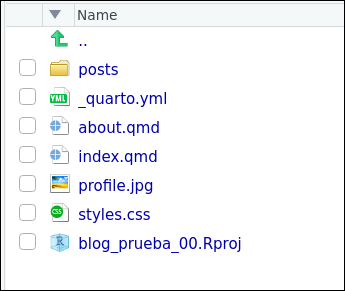
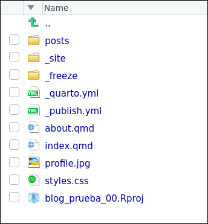

![]()
quarto create-project blog_prueba_00 --type website --template blog Creación de un blog básico con Quarto
(1ª parte del taller Mi primer blog con Quarto)
1 Creación de la carpeta (o Qproject) que contendrá nuestro blog
El primer paso para crear nuestro blog es crear el proyecto (o carpeta) donde se alojarán los ficheros que necesitemos para nuestro blog.
Vamos a crear el blog con Quarto pero interactuando con él a través de RStudio. Desde RStudio crearemos un Quarto Project1, concretamente un Quarto project prediseñado para crear blogs.
Tarea 1.1
De momento aún no tenemos el blog, solo hemos creado una carpeta/Qproject pero, ya tenemos, dentro de la carpeta, la estructura de carpetas y archivos necesarios para crearlo.
Cuando creemos el blog, será un blog sencillito, vamos con lo mínimo, pero un blog.
Antes de crear el blog hagamos un pequeño repaso al contenido del Qproject, veamos su estructura de carpetas y archivos.
2 Contenido del Qproject
El Qproject que acabamos de crear y que permitirá crear el blog tiene esta estructura de archivos y carpetas:

Como ves en la figura anterior, el Qproject contiene 6 archivos y una subcarpeta. Voy a dividirlos en dos categorías:
los que no son importantes (al menos ahora mismo)
Los que sí son importantes ahora mismo, serán 3 archivos
2.1 Archivos “no importantes”
- El archivo
blog_prueba_00.Rproj
No es un archivo importante para el blog. Este archivo simplemente permite que RStudio reconozca la carpeta blog_prueba_00 como un Qproject.
- El archivo
styles.css
Sí será un archivo importante, pero lo veremos más adelante. Este archivo permitirá mediante CSS cambiar la estética de nuestro blog.
- El archivo
profile.jpg
Es sencillamente una foto. La tendremos que sustituir por una foto nuestra en la que estemos guapetes.
- La carpeta
posts
Será muy importante, pero la veremos más adelante. Esta carpeta es la que contendrá los posts que vayamos escribiendo.
2.2 Archivos sí importantes
Nos quedan 3 archivos que será en los que nos concentraremos en este tutorial:
_quarto_yml
Es el archivo que especifica como será la estructura y apariencia de nuestro blog.
about.qmd
Un archivo .qmd que generará el archivo about.html y que será una de las páginas de nuestro blog; precisamente en esta página se verá nuestra foto.
index.qmd
Otro archivo .qmd que generará el archivo index.html y que será la “landing page” o Home de nuestro blog.
3 Creación del blog
El Qproject que hemos creado tiene todo lo necesario para crear un blog, pero aún no lo hemos creado. Para crearlo solo tienes que:
Tarea 1.2
Si todo ha ido bien, verás algo como esto en RStudio:
Render Website se creará el blog- Puedes ver aquí, como quedaría el blog una vez alojado en internet.
4 Veamos otra vez la estructura de carpetas
Tras haber creado el blog, la estructura de carpetas de nuestro Qproject ha cambiado, concretamente se han generado 2 subcarpetas. Veámoslo:

Se han creado 2 subcarpetas
Si comparamos la estructura de carpetas antes y después de hacer Render Website vemos que se han creado 2 carpetas:
_freeze
La carpeta _freeze podemos dejarla para más adelante.
_site
La carpeta _site es la que realmente contiene el blog. Si alojas el contenido de esa carpeta en un servidor web se verá el blog que hemos creado.
Contenido de /_site/
Antes de publicar el blog, vamos a ver el contenido de la carpeta _site que es la que contiene realmente el blog:

_site, la carpeta que contiene el blogTarea 1.3
La página principal del blog
Hemos visto que la página principal (Home) del blog consiste en una lista de los posts de nuestro blog2
La página principal (o Home) de nuestro blog es el archivo
index.html.El archivo
index.htmlha sido generado por el ficheroindex.qmd.
Extensiones: ver el contenido del archivo
index.qmd
Contenido del archivo index.qmd que genera a index.html:

Como vemos, el archivo
index.qmdno tiene contenido, sólo contiene unyamlo encabezamientoEse encabezamiento genera una lista (
listing:) con los contenidos (con los ficheros .qmd) que haya en la carpetaposts.Sí, has imaginado bien, en la carpeta
postses donde estarán los ficheros .qmd que generarán los postsEl resto del yaml son opciones para nuestro blog. Por ejemplo,
sort: "date desc"ordenará el listado de post de más reciente a más antiguo.Lo iremos viendo
5 Alojando el blog
El blog que hemos creado no es muy interesante, pero vamos a ver lo fácil que es publicarlo en internet.
Hay muchas formas de alojar nuestro blog, por ejemplo Github Pages Netlify etc… , pero, de momento, usaremos el servicio Quartopub
Tarea 1.4
Extensiones: el fichero
_publish.yml
Si te fijas, tras haberse publicado el blog en “Quarto Pub”, se habrá creado un nuevo fichero en nuestro Qproject: es el fichero _publish.yml. En él solamente están los metadatos necesarios para publicar y actualizar nuestro blog.